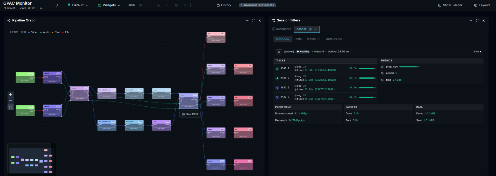

01 / TÉLÉCOM PARIS · GPAC
GPAC
Monitor.
Une application d’observabilité des pipelines multimédias : graphe interactif, logs, métriques et diagnostic en temps réel. Le mode History / Replay reconstruit l’état d’une session pour explorer les événements passés.
851 → 105 msINP mesuré après optimisation
900+tests automatisés cités dans le CV